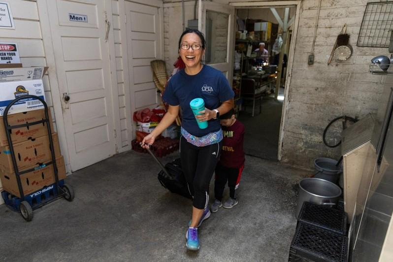
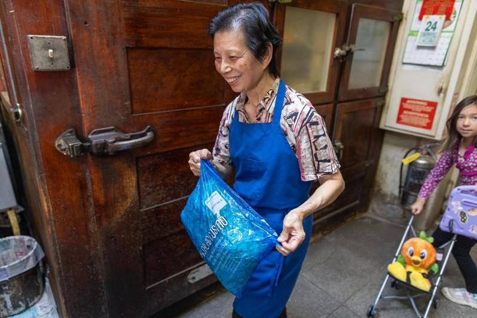
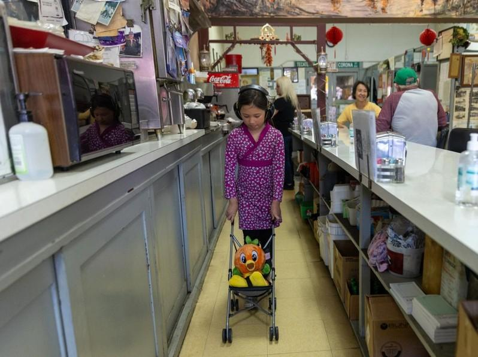
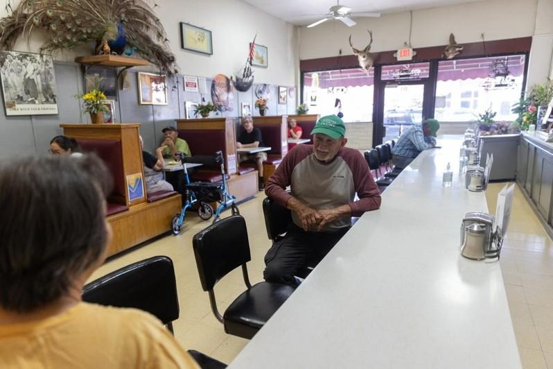
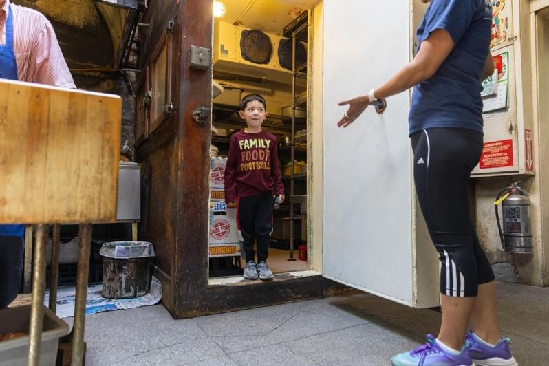
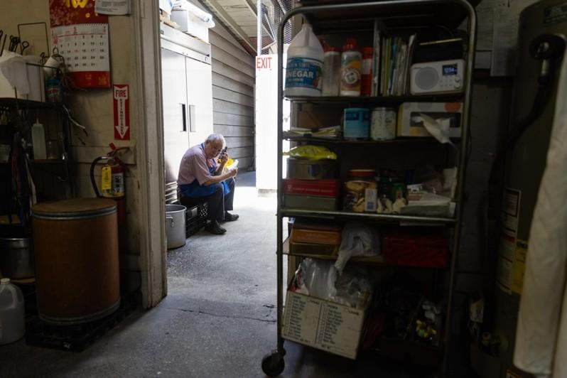
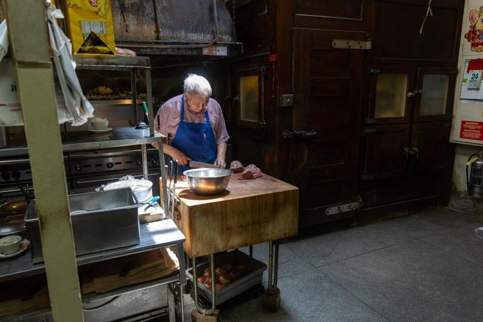
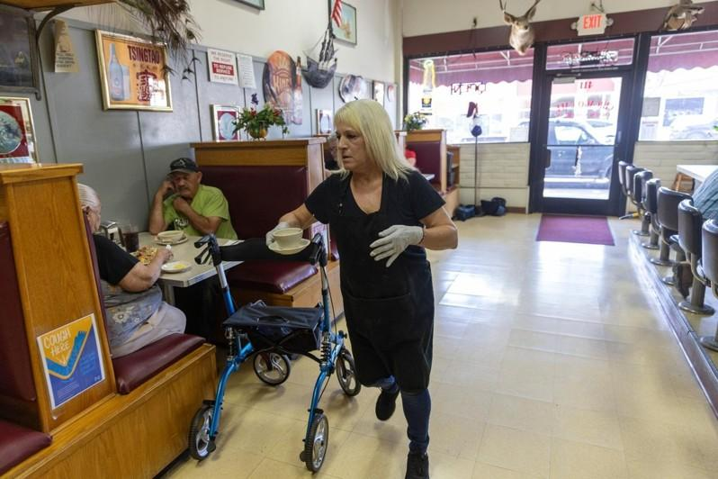

戴维斯加大（UC Davis）的一位法学教授对柜台上方贴着的一块牌子产生了兴趣，上面写着：「芝加哥咖啡馆（Chicago Cafe），始自1903 年。」不久，北加州伍德兰市(Woodland)方氏家族面临的难题就出现了。
方氏夫妇除了为经营在社区拥有悠久历史的家族企业而感到自豪之外，从未多想过这块牌子的意义。76 岁的方保罗 (Paul Fong)自 1973 年从香港移民过来，与 67 岁的妻子南希 (Nancy) 一直在这家餐厅工作。
而他们的孩子，47 岁的物理治疗师 Amy Fong 和 45 岁的苹果软件品质工程师 Andy Fong 也如此。他们从小在放学后到餐厅扫地、做作业，但在父母的严格命令下去念大学（Amy上柏克莱加大；Andy上圣荷西州大），好能将来从事好的职业，远离餐馆工作的苦差事。现在，他们有了自己的孩子，也期待父母退休后的生活。他们希望父母能够轻松闲适，并与孙辈共度时光。
然后，2022 年的一天，加大戴维斯的法学教授秦杰克(Gabriel Jack Chin) 来吃午餐。 秦教授是移民法方面的专家，特别专注的是1882 年的排华法案，该法案使中国人移民到美国变得极其困难。秦教授知道的秘密，使得方氏家族希望逐步关闭餐馆的计划变得复杂：如果那块牌子准确无误，如果芝加哥咖啡馆确实自 1903 年以来一直营业，那将使其成为极具历史意义的宝藏。
媒体争先报导游客涌入
1月份，加大戴维斯公布了秦教授的研究结果：在美国数以万计的中餐馆中，方氏一家默默耕耘的小餐馆，是加州持续经营的最古老的一家，而且很可能也是全美国最古老的。它拥有一段重要的美国历史，而它就在沙加缅度西北20 哩的一个农业小镇的众目睽睽之下，但过去却没人知道。
媒体争先恐后地报道这个故事，大批新顾客也随之而来。伍德兰市议会发布了一份公告，其中包括议会成员对他们最喜欢的菜肴的评价。于是保罗和南希没有退休，而是加倍努力的工作。
最近的一个周五，Amy带着两个孩子来到餐厅，一如往常的是友善混乱状态。顾客几乎占据了每张桌子，许多人都在吃着餐厅的招牌杂碎—就像芝加哥咖啡馆提供的许多食物一样，这是一道在中国本土见不到的美式中国菜肴。
跟随方氏夫妇几十年的欧斯塔(Dianna Oldstad)是唯一的服务员。她来来往往，粗声粗气地热情地与常客打招呼。在厨房里，保罗和南希在切菜板与炒锅之间奔波，并以令人眼花缭乱的速度把做好的菜递出去。守护着这一切的是墙壁上的鹿、麋鹿和一只巨大的毛绒孔雀，它的尾巴展开，发出蓝绿色的光芒—这些是多年来顾客赠送的礼物。
保罗对服务顾客的自豪感显而易见，其中许多人已经成为朋友和钓鱼伙伴。尽管如此，他的女儿沮丧地指出：「他们已经太老，不能再每天这样操劳了。」
这个家庭的困境如此明显，以至于老顾客在等待食物时都在谈论这个问题：保罗和南希退休后，芝加哥咖啡馆会就此结束吗？当方氏家族最终退出时，它的历史意义又是如何呈现的呢？
「纸儿子」V.「捞面漏洞」
挖掘一家已经在小镇上营业了 100 多年的中餐馆的历史，比人们猜想的要复杂得多。秦教授表示，部分原因是 20 世纪初的种族主义：直到 20 世纪 30 年代，本地名录都将亚洲人和企业排除在外。因此，必须在其他地方找到业务记录。
排华法案又增加了另一个难题。该法律试图禁止移民，但并没有完全阻止它。相反的，许多中国人购买了在美国出生的华裔美国人的身分，然后冒充他们的亲戚。使用假身分而来的移民称为「纸儿子」(paper son)。
有一段时间，餐厅对《排华法案》有自己的例外处理方式—有人创造了「捞面漏洞」一词，即允许以企业东主签证前往中国带回员工。 1915 年之后的几年里，当联邦法院将餐厅添加到允许此类签证的企业名单中时，美国的中餐馆数量呈爆炸式增长。
几乎可以肯定，方保罗的祖父是在「捞面漏洞」生效之前到来的。他以纸儿子的身分来到旧金山湾，化名哈利杨(Harry Young)。确切的年份已被历史遗忘：1906 年旧金山的地震引发了一场大火，烧毁了大量的入籍记录，也让许多人在重建记录时在卷册中添加了额外的「亲戚」。
「哈利杨」前往伍德兰，那里已经开发了一个繁忙的唐人街，居住着兴建美国铁路的中国移民。当时，伍德兰的许多街区都充满了庄严的维多利亚风格建筑，坐落在高耸的橡树遮荫的大片土地上。它的唐人街没那么宏伟：只是沿着主街后面的死猫巷建造的一系列木头和砖头建筑。
方保罗不知道他的家族是如何开了餐厅的，以及他们到底为什么称之为芝加哥咖啡馆。他出生在广东省台山地区，那是祖父离开很久之后的事，他们从未见过面。当保罗还年轻的时候，他的父亲离开台山到伍德兰与祖父团聚。他也是纸儿子，名字叫Yee Chong Pang。
1973 年，保罗和他的母亲以及南希一起加入了他父亲的餐厅。他们本来可以更早来，但由于他的父亲和祖父都是纸儿子，即使在1965年《移民法》通过后，仍有官僚手续需要突破。《移民法》最终为亚洲移民打开了美国大门。
保罗从香港来到伍德兰，香港是个大城市，即使在 1973 年，人口也超过 400 万。伍德兰只有 2 万居民，这对他们是一大震惊。
「在香港，有很多人，」他回忆道。街道熙熙攘攘，夜生活热闹非凡。伍德兰夜生活中最热闹的是星星：没有城市灯光，星星更加灿烂。
但保罗渐渐喜欢上了它。尽管他的英语说得有限，但他结交了一些朋友。Amy回忆说，一袋袋刚杀的鸭子和一卡车的意大利瓜会定期送到餐厅门口。当一位朋友不小心撞到一只孔雀时，它也最终出现在餐厅—挂在墙上，而不是放在盘子上。
Andy说，多年来父母很少透露他们一家人是如何到伍德兰的。他回忆起小时候去伍德兰公墓给祖父扫墓的情景，并惊讶地发现墓碑上刻的是「Young」而不是「Fong」。那时他第一次听到纸儿子一词。
移民餐馆草根性强
方家的孩子每天下午放学后都会去餐厅。回顾他们的童年，他们可以体会到这是一个当地的聚会所。来自各行各业的几代家庭前来享用午餐和举办特别活动。在最近的一次市议会会议上，几乎每位议员都有自己的个人故事，有些可以追溯到几十年前。
「我的家人是吃芝加哥咖啡馆长大的，」市长 Tania Garcia-Cadena 说。女议员Vicky Fernandez)回忆说，她的家人也是这样。 「你们的大门一直向我们所有人敞开，」她说，并补充道，因为她的家人是墨西哥裔美国人，所以不是城里的所有餐厅都欢迎他们。
尽管保罗和南希对自己的过去感到自豪，但他们始终明白一点：他们的孩子不会加入这个家族企业。 「我爸爸明确地告诉我们，他希望我们上大学，不要做餐馆，太辛苦了。」Andy回忆道。 他们的计划是，当夫妻俩退休时，方氏家族就永久退出餐饮业。
揭示华裔长期承受法律歧视
十哩外，加大戴维斯King Hall 的办公室里，秦教授一直在想着柜台上方的标牌。 秦教授在康乃狄克州长大，不会说中文。但他对中餐馆很感兴趣，因为它们揭示了华裔的历史以及他们长期以来承受的法律歧视。
美国的中餐馆数量比麦当劳还多，而且提供的食物非常一致。 「很多我们在美国认为是中国菜的食物其实是美国化了，在中国却几乎不为人知：左宗棠鸡、青花菜牛肉（青花菜原本是意大利的蔬菜）、杂碎、蛋卷、幸运签饼(fortune cookies)。尤其是幸运签饼，」记者 Jennifer Lee 在 2008 年一篇关于她的书《幸运签饼编年史》的文章中解释道。
芝加哥咖啡馆尤其如此，这里供应美式的香肠和鸡蛋、猪排和苹果酱，周五供应蛤蜊浓汤(clam chowder)，以及传统的美式中国菜肴，如炒杂碎和炒面。 秦教授说，虽然这些老餐馆没有透露太多关于中国菜的信息，但它们确实透露了许多关于美国的资讯。 身为法学教授，秦教授对民选官员和劳工领袖如何制定法律以推动更大的反移民议程很感兴趣。
2018 年，他和一位同事发表了一篇名为《针对中餐馆的战争》的论文，其中阐述了20 世纪初为将中餐馆赶出市场而采取的创新法律措施，包括分区、颁发许可证和试图规范妇女的活动。 研究那篇论文让他敏锐地意识到美国有多少家中餐馆，而且其中许多都转瞬即逝。
他知道大多数权威人士认为，最古老的持续经营的中餐馆是位于蒙他拿州比尤特(Butte)的北京面馆(Pekin Noodle Parlor)，起源可以追溯到 1909 年或 1911 年。
但如果芝加哥咖啡馆是在 1903 年开业，那就更古老了。 秦教授问方家可否让文献师查明真相？家人说：当然可以。于是一批研究员到餐馆和镇上翻找历史文档，今年春季秦教授和他的研究团队发表了一篇论文，声明芝加哥咖啡馆是美国持续经营的最古老中餐馆。
瞬时间这家门面简朴的「只收现金」中餐馆，成为北加州的一个热门旅游景点。到沙加缅度或旧金山的许多访客，只要有可能必来这里光顾享用，本地居民反而难以入门。帕许克（Michelle Paschke）是方家的朋友，原来是附近一家商店的东主。那天下午，她好不容易在柜台找到一个座位，手上拿着现金，环顾四周，很多人都跟她一样，欧斯塔打手势给她，表示会尽快来收钱。
这家餐馆是否很快会消失在历史云烟中？至少在这一天，顾客仍然欢天喜地的享受着这里的佳肴。
The last days of California’s oldest Chinese restaurant: From anonymity to history
https://www.latimes.com/california/story/2024-08-01/they-run-californias-oldest-chinese-restaurant-but-is-it-time-to-close






